| Measure | Value |
|---|---|
| Observation file | GlobalGeoTree.csv |
| Period analysed | 2015-2024 |
| Rows analysed | 6,263,345 |
| Distinct sources | 2,493 |
| Distinct source groups | 5 |
| Distinct countries | 221 |
| Distinct species | 21,001 |
| Coordinate columns available | Yes |
RQ3 - Temporal Development in GlobalGeoTree
Changes in tree observation volume, source composition, and geographic coverage from 2015 to 2024
Research Question
RQ3 - Temporal Development
How has the number and distribution of tree observations changed from 2015 to 2024?
This report answers four subquestions:
- Has the number of observations increased over time?
- Which years show the strongest growth or decline?
- Did geographic coverage expand over time?
- Are temporal patterns mainly driven by specific sources?
The key idea is that time trends in GlobalGeoTree may reflect both real changes in observation coverage and the growth of data platforms such as iNaturalist and Pl@ntNet.
Data Loading
This report uses 6,263,345 observations from 2015 to 2024.
Observation Growth Over Time
Why we look at this: before asking anything more detailed, we first need to know the basic shape of the data over time - is the number of observations going up, down, or staying flat?
Between 2015 and 2024, observations changed from 205,055 to 855,708, an overall change of 317.3%.
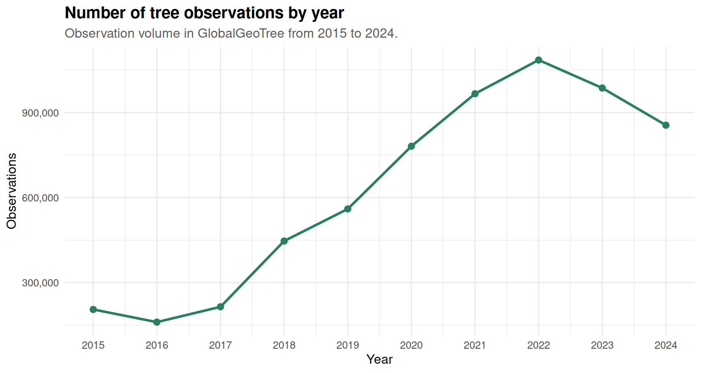
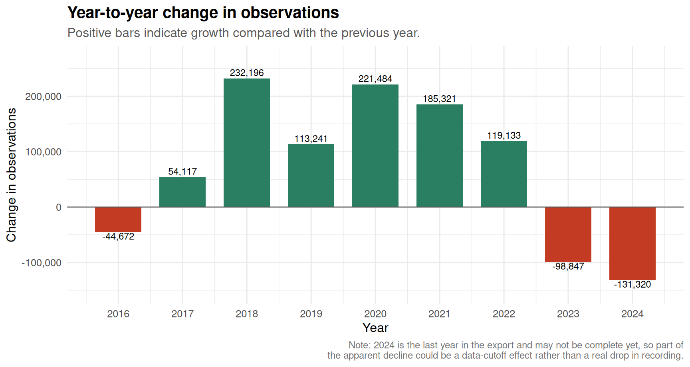
Interpretation. The strongest growth occurs in 2018, with 232,196 more observations than the previous year. The strongest decline occurs in 2024, with -131,320 fewer observations than the previous year.
Why this caveat matters: if the 2024 data was exported partway through the year, the dataset simply hasn’t had time to accumulate as many records as a full year would produce. That alone could explain most or all of the apparent “decline” - it doesn’t necessarily mean fewer trees are being recorded. This should be re-checked once a complete year of 2024 data is available, and it should also be read together with the source composition below, since a platform slowing down its exports would create the exact same pattern.
Are Temporal Patterns Driven by Specific Sources?
Why we look at this: a rise in total observations could either mean “more tree recording is genuinely happening everywhere”, or it could simply mean “one citizen-science app (like iNaturalist) grew a lot and is dragging the total up with it”. The charts below try to tell these two explanations apart.
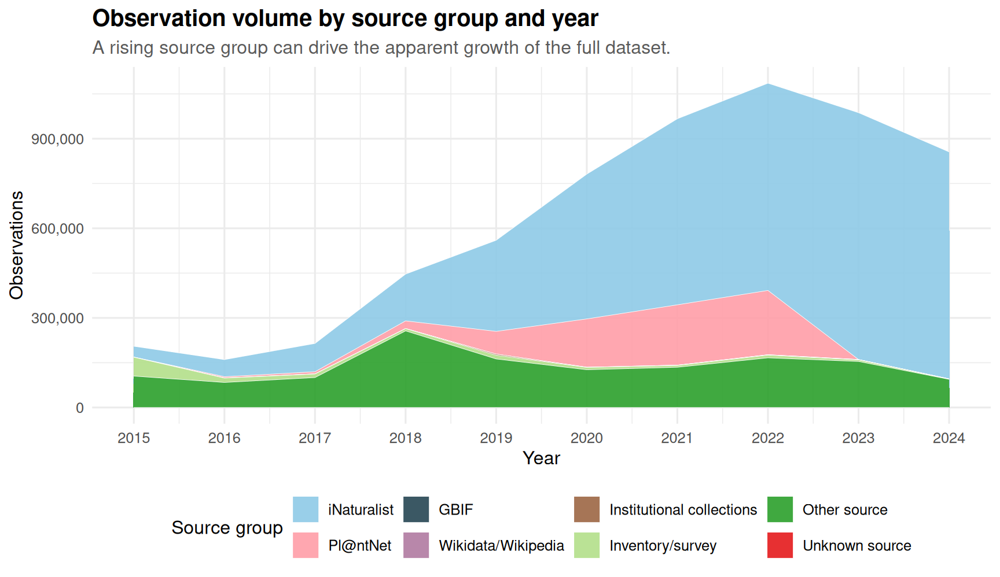
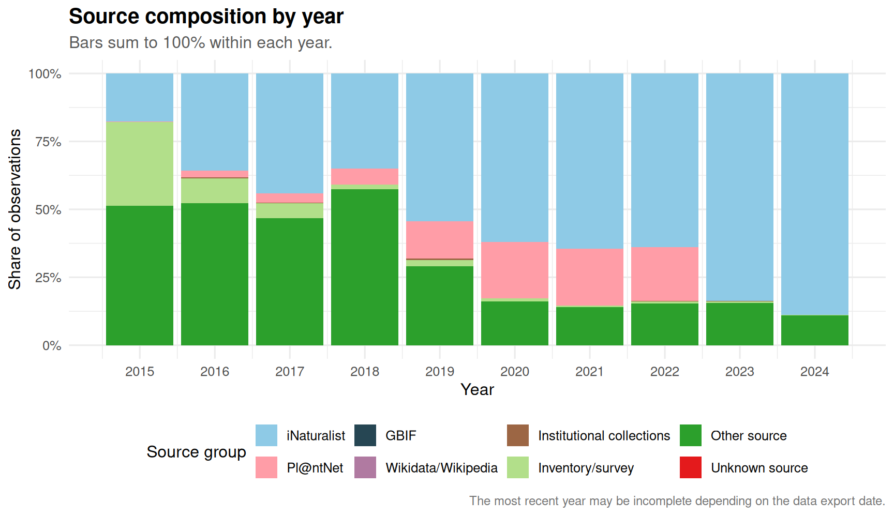
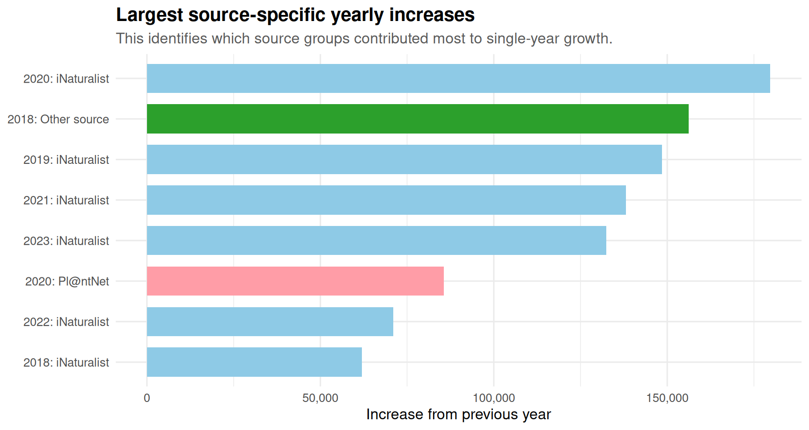
Interpretation. If most growth is concentrated in one source group, the temporal trend is source-driven. In that case, the line chart should not be interpreted as a neutral increase in global tree recording.
One limitation to flag: this chart ranks absolute increases, and the dataset as a whole gets bigger every year, so later years have a built-in advantage simply because there’s more data overall to grow from. A version using percentage growth per source (instead of raw counts) would separate “this source genuinely exploded” from “this source is just large in a year that was large for everyone” - worth doing as a follow-up if this distinction matters for the conclusions.
Geographic Coverage Over Time
Why we look at this: more observations is not the same as broader observations. A dataset could double in size just by recording the same few countries more intensively. The charts below check whether new places are actually being added over time (subquestion 3).
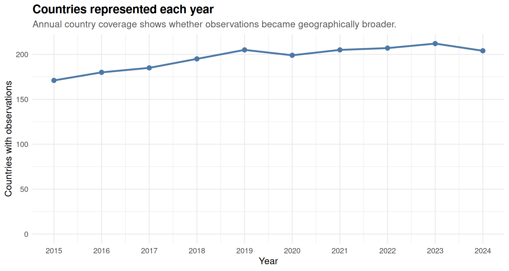
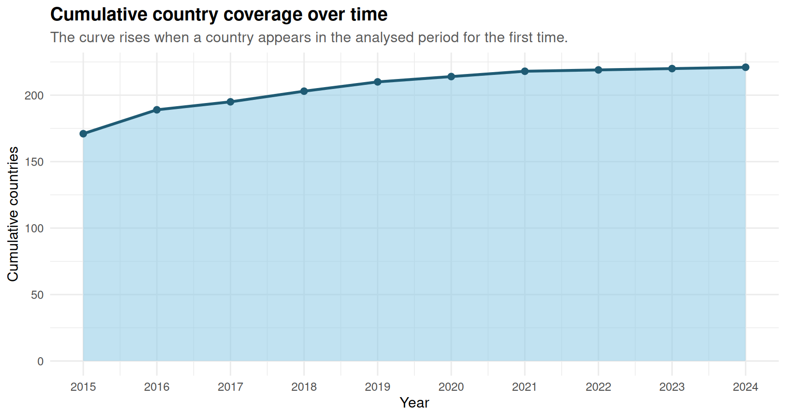
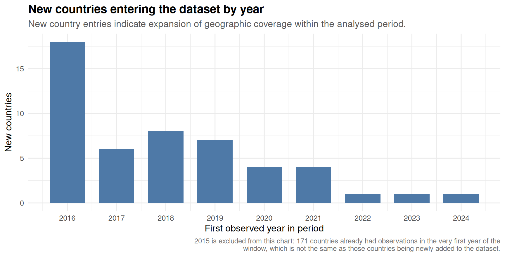
Interpretation. If the number of countries and cumulative country coverage increase over time, GlobalGeoTree is expanding geographically. If observation counts increase without much country expansion, growth may be concentrated in already well-covered countries.
Which Countries Drive Temporal Growth?
Why we look at this: the charts above tell us how many countries are covered, but not which countries are responsible for the swings we saw in the very first growth chart. This breaks growth down by country instead of by source, as a cross-check.
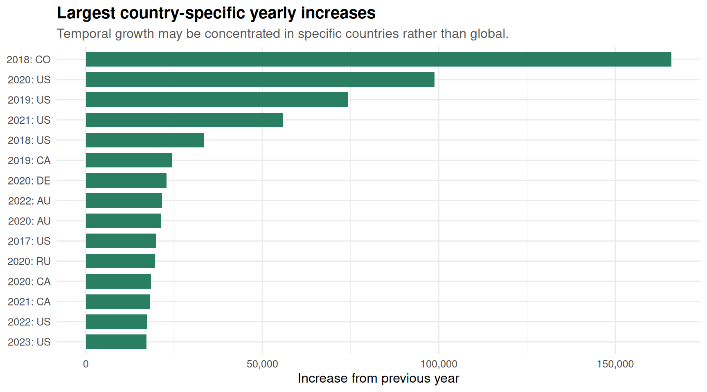
Map Snapshots for Selected Years
Why we look at this: country counts treat a huge country and a tiny one the same way. Plotting the actual coordinates lets us see where inside countries the observations are - whether the dataset is spreading into new regions or just getting denser in the same spots.
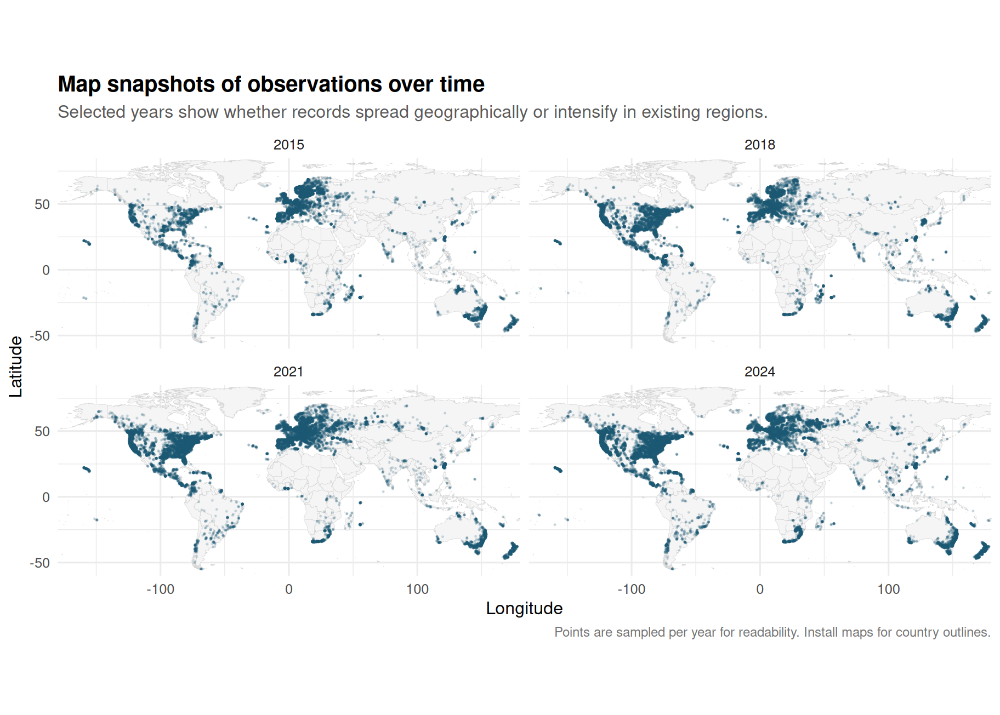
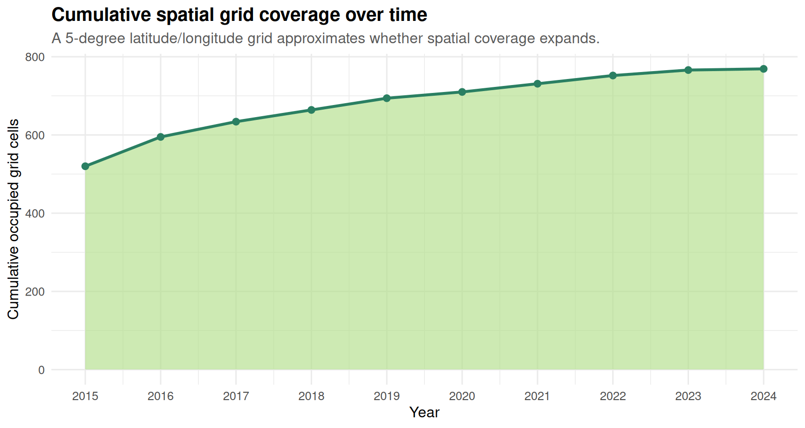
Interpretation. Map snapshots and grid coverage distinguish two different processes: more observations in the same places versus expansion into new regions.
Overall Interpretation
From 2015 to 2024, temporal development in GlobalGeoTree should be interpreted as a combination of:
- changing observation volume,
- expansion or concentration of geographic coverage,
- country-specific growth,
- and source/platform growth.
If the strongest year-to-year increases are driven by citizen-science platforms or a small number of countries, the temporal trend is not purely biological. It is partly a record-production trend. Therefore, temporal analyses should report both total observations and source composition by year.
Two limitations worth keeping in mind before treating the headline numbers as final:
- 2024 is likely an incomplete year in this export, so the apparent decline at the end of the series may shrink or disappear once a full year of data is available.
- The “new countries” chart excludes 2015 because countries present at the very start of the analysis window are not the same as countries that newly entered the dataset; counting them as new would overstate geographic expansion.